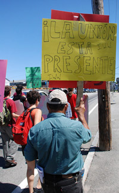

Submitted on Wed, 08/29/2007 - 4:53am
Disclaimer - The opinions of the author do not necessarily match those of the IWW. The image pictured to the right did not appear in the original article, we have added it here to provide a visual perspective. This article is reposted in accordance to Fair Use guidelines.
By Mark Arsenault and Lynn Arditi - Providence Journal Staff Writers, Monday, August 27, 2007
 NORTH PROVIDENCE — Clenched fists raised, close to 200 protesters yesterday denounced the North Providence police and demanded “justice” for a protester seriously injured two weeks ago while demonstrating at an Asian restaurant on Mineral Spring Avenue.
NORTH PROVIDENCE — Clenched fists raised, close to 200 protesters yesterday denounced the North Providence police and demanded “justice” for a protester seriously injured two weeks ago while demonstrating at an Asian restaurant on Mineral Spring Avenue.
Submitted on Sat, 08/25/2007 - 12:45pm
Disclaimer - The opinions of the author do not necessarily match those of the IWW. This article is reposted in accordance to Fair Use guidelines.
NORTH PROVIDENCE, RI (AP) - A labor group is planning a rally Sunday to protest a scuffle earlier this month with North Providence police.
Local members of the [Industrial] Workers of the World accuse police of attacking 22-year-old Alexandra Svoboda during a protest outside a restaurant.
Police say Svoboda attacked police officers with drum sticks.
Her knee was badly injured during the scuffle.
Pictures taken by those at the rally show it bent at a grotesque angle.
IWW spokesman Mark Bray says the group wants Attorney General Patrick Lynch to drop all criminal charges against Svoboda and other group members.
They also want him to punish the police.
North Providence police have started an internal probe into the incident.
Lynch says prosecutors from his office and State Police will review the findings.
Submitted on Fri, 08/24/2007 - 12:32pm
Workers at Flaum Appetizing Corp., a high-end kosher appetizer wholesaler that caters to the Orthodox and Hasidic Jewish communities, are joining the Industrial Workers of the World, local 460/640, to fight against alleged sweatshop conditions on the job. They have filed a class-action suit to recover unpaid overtime.
Submitted on Mon, 08/20/2007 - 3:43am

RECENT UPDATES
I.W.W. Victory: Jacky's Galaxy Discontinues Business With Dragonland Trading Inc.
On Thursday August 16, 2007, "Jacky Ko", members of the Industrial Workers of the World and their respective lawyers appeared in Superior Court in Providence. Under oath, Ko stated that he no longer does, nor will he ever again, knowingly do business with Dragonland. Considering Ko stated this under oath, the IWW considers this sufficient evidence of Ko's divestment.
Furthermore, New Buffet restaurant in Providence confirmed that they have also divested in Dragonland. This is a clear and absolute victory for the IWW, union rank and file at Dragonland and Alexandra Svoboda, who was brutalized on the picket line. Alex will undergo her third surgery tomorrow at RI Hopital and will be operated on at least one more time.
Submitted on Thu, 08/16/2007 - 2:58am
Disclaimer - The opinions of the author do not necessarily match those of the IWW. The image pictured to the right did not appear in the original article, we have added it here to provide a visual perspective. This article is reposted in accordance to Fair Use guidelines.
By Richard C. Dujardin - Providence Journal Staff Writer, Thursday, August 16, 2007
NORTH PROVIDENCE — The group that staged Saturday’s protest march in which a 22-year-old woman suffered a broken leg while being arrested by the police has invited members from across the Northeast to join another march down the center of Mineral Spring Avenue to call attention to what it says is the “prevalence of police brutality” in Rhode Island.